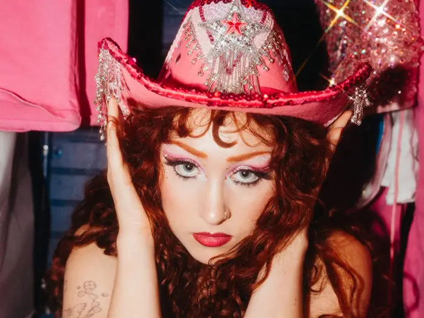

Navegación

Kayleigh Rose Amstutz (Willard, Misuri, 19 de febrero de 1998) conocida por su nombre artístico Chappell Roan
es una cantante y compositora estadounidense.
Su música está inspirada en el synth pop de los años 80 y éxitos pop de principios de los años 2000.
Su estética está fuertemente influenciada por las drag queens y la industria del circo.
Su música ha sido calificada como camp. Cuando tenía 17 años, subió una canción titulada Die Young a YouTube.
En 2017, firmó con la discográfica Atlantic Records y lanzó su primer EP, School Nights.
Su sencillo de 2020 Pink Pony Club ayudó a Chappell a alcanzar prominencia, y dejó el sello discográfico ese mismo año para firmar
con Amusement Records e Island Records.
Tras una serie de lanzamientos independientes, su álbum debut, The Rise and Fall of a Midwest Princess, fue lanzado en 2023 y
debutó en la posición dos del Billboard 200.
A los 17 años, firmó su primer contrato con Atlantic Records después de subir canciones a YouTube, como “Die Young” a internet. El precio: una juventud fragmentada entre vuelos a Nueva York y Los Ángeles, que llevaron a que se pierda su evento de graduación.
En 2016 adoptó el nombre artístico de Chappell Roan en honor a su abuelo Dennis K. Chappell, quien falleció ese mismo año, y por su canción favorita, The Strawberry Roan de Curley
En 2020, después de publicar “Pink Pony Club”, Atlantic Records la dejó ir. El plot twist: esa canción, inspirada en un club gay de West Hollywood, terminó siendo su carta de presentación global.
Tras tocar fondo, reconstruyó su carrera desde cero en 2022: independiente, más teatral y abrazando una identidad inspirada en el drag. No fue evolución natural. Fue supervivencia creativa.
Antes de dominar charts, Chappell construyó culto en escenarios pequeños y como telonera de Olivia Rodrigo. Su paso por el Sour Tour no solo la expuso: convirtió cada presentación en una experiencia teatral, con coreografías, vestuario y narrativa. Mientras otros abrían shows, ella montaba universos.